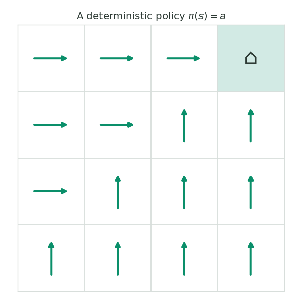
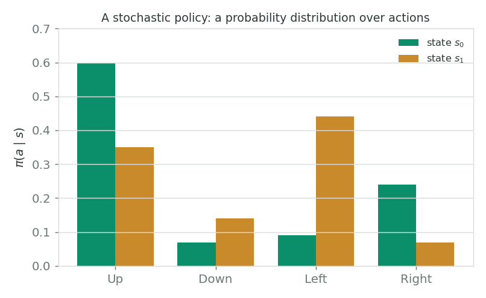
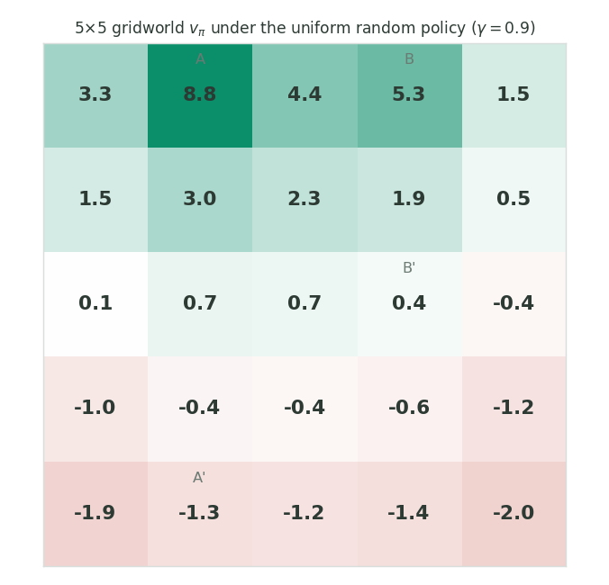

Policies & Value Functions
Policies
A policy is the agent's behaviour: a rule that tells it which action to take in each state. In the simplest case a policy maps each state to a single action. This kind of policy is called a deterministic policy, written
which reads "the action selected in state $s$ by the policy $\pi$ is $a$". We can visualise a deterministic policy as a table: each row names a state and the action chosen there. Note that the agent is free to select the same action in multiple states.
| State | Action |
|---|---|
| $s_0$ | $a_1$ |
| $s_1$ | $a_0$ |
| $s_2$ | $a_0$ |
In a gridworld where the states are cells and the goal is to reach a particular square, a deterministic policy is just an arrow drawn in every cell pointing at the action it prescribes.

figures/gen_week3.py.Stochastic policies
More generally, a policy assigns probabilities to each action in each state. A stochastic policy is one where multiple actions may be selected with non-zero probability. We write
for the probability of selecting action $a$ in state $s$. Since $\pi(\cdot \mid s)$ is a probability distribution over the available actions, it must be non-negative and sum to one in every state:
A deterministic policy is just the special case where all the probability mass sits on a single action. Each state can carry its own separate distribution over actions.

figures/gen_week3.py.Valid and invalid policies
A subtle but important restriction: a policy may depend only on the current state, never on the history of states that came before. Consider an agent oscillating between two states by going left and right:
- Policy 1 – "go left with probability $0.5$ and right with probability $0.5$" in each state – is a valid policy, because it does not rely on past states.
- Policy 2 – "alternate left and right" – is an invalid policy, because deciding the next action requires remembering the last action taken, which is information about the past.
The state-value function
A policy tells the agent how to act; a value function tells it how good acting that way is. The state-value function $v_\pi(s)$ is the expected return when the agent starts in state $s$ and follows policy $\pi$ thereafter:
The expectation $\mathbb{E}_\pi$ is taken over all the randomness that follows: the actions drawn from $\pi$ and the next states and rewards drawn from the MDP's dynamics $p$. Crucially, the value depends on the policy: the same state is worth more under a better policy.
The course's example is chess. Chess is an episodic MDP: the state is the position of all pieces, the actions are the legal moves, the game terminates on a win, loss, or draw, and the reward is $+1$ for winning and $0$ for every other move. That reward signal says almost nothing about how well you are playing mid-game: you would have to wait until the very end to see a non-zero reward. The value function tells you much more. Since the only non-zero reward is $+1$ for winning, the state-value $v_\pi(s)$ is exactly the probability of winning from position $s$ if you keep following policy $\pi$. A position with $v_\pi(s) = 0.34$ is one you win about a third of the time.
The action-value function
Sometimes we want to know the value not just of a state, but of taking a particular action in that state and only then following the policy. That is the action-value function $q_\pi(s, a)$:
The difference from $v_\pi$ is the extra condition $A_t = a$: we force the first action to be $a$ regardless of what the policy would have chosen, and only afterward defer to $\pi$. The two are tightly linked. Averaging $q_\pi(s, a)$ over the actions the policy would actually take recovers the state value:
Action values are what let an agent compare actions and improve, so they sit at the heart of control methods later in the specialisation.
Worked example: the 5×5 gridworld
The classic example makes value functions concrete. Consider a $5 \times 5$ gridworld, a continuing MDP. The actions are the four movements (up, down, left, right) and the state is the cell location. Bumping into a wall leaves the agent in place and yields a reward of $-1$; most other moves yield $0$. There are two special states:
- From state A, every action yields $+10$ and teleports the agent to $A'$.
- From state B, every action yields $+5$ and teleports the agent to $B'$.
Suppose we follow the uniform random policy: every direction equally likely, $25\%$ each. What is each state worth? With $\gamma = 0.9$ this is a finite linear system (one equation per state, twenty-five in all), which we can solve exactly. I solved it from code and the result reproduces the textbook table:

figures/gen_week3.py.The interesting cell is A. Even though acting from A yields a reward of $+10$, its state-value comes out to about $8.8$, less than $10$. Why? Because every transition from A dumps the agent down at $A'$ near the bottom wall, and near a wall the uniform random policy is likely to bump into it and collect negative rewards on the steps that follow. The value function quietly accounts for that future, which a one-step reward never could.
In Part 2 we will see why these values form a solvable linear system: the recursive return $G_t = R_{t+1} + \gamma G_{t+1}$ turns into the Bellman equations, and from there into the notion of an optimal policy.